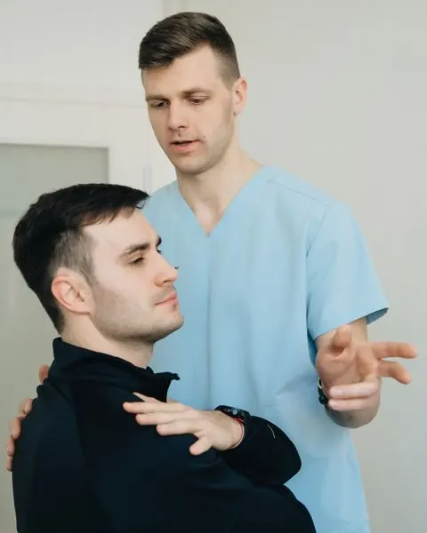

- Home
- Services
Our services
Care for the Back, Neck & Every Joint Between
Six areas of musculoskeletal care, delivered by chiropractors and physical therapists who plan together. Every course of care starts with a 60-minute assessment.
What we treat
Six Services, One Joined-up Team
Not sure which you need? Book a first visit and we'll recommend chiropractic, physical therapy or a mix.
-
01
Spine & Back Care
Assessment and hands-on care for low-back and mid-back problems, from desk-related stiffness to lifting strains, paired with a simple home routine.
- Low-back and mid-back stiffness
- Lifting and bending strains
- Sciatica-type leg symptoms (assessed and referred on when needed)
-
02
Sports Injury Rehab
Structured rehab for sprains, strains and overuse problems, with strength and return-to-sport testing before you step back up.
- Ankle and knee sprains
- Hamstring and calf strains
- Running and racquet-sport overuse problems
-
03
Post-Surgery Rehab
Physical therapy after knee, hip, shoulder or spinal surgery, coordinated with your surgeon's protocol and progressed week by week.
- Knee and hip replacement rehab
- ACL reconstruction programs
- Shoulder repair and spinal surgery follow-up
-
04
Joint & Mobility Care
Mobility work for stiff hips, knees and shoulders, including joint mobilization, guided exercise and practical advice for daily movement.
- Stiff hips, knees and shoulders
- Age-related joint stiffness
- Balance and walking confidence
-
05
Neck & Posture Care
Chiropractic assessment and treatment for neck stiffness and tension headaches linked to posture, with workstation and sleep-position advice.
- Neck stiffness and limited rotation
- Tension-type headaches linked to posture
- Workstation and sleep-position advice
-
06
Work & Desk Strain
Care for repetitive strain at work: wrist, elbow and shoulder assessment, graded exercise and a plan that fits your working day.
- Wrist and elbow strain
- Shoulder and upper-back tension
- Graded return-to-work plans


Chiropractic + physical therapy
How the Two Work Together
Chiropractors focus on joint and spinal assessment, manipulation and mobilization. Physical therapists focus on exercise, strength and getting you back to the activities that matter to you. Many plans use both, in the same week, in the same building.
- Joint review at the end of every block of visits
- One home program, not two competing ones
- A letter to your doctor or surgeon on request
Good to know
What We Don't Do, and Who We Refer To
We don't prescribe medication
If medication might help, we'll suggest you talk to your doctor and share our findings with them if you'd like.
We don't take X-rays on site
When imaging is needed we refer you to a local imaging center or to your doctor.
We refer on when it's not for us
If something in your assessment needs a medical opinion first, we'll tell you plainly and help you arrange it.
We see adults only
Our clinicians treat patients aged 18 and over. We're happy to recommend a pediatric clinic.
Not sure where to start?
Book a first visit and we'll recommend the right mix of care.